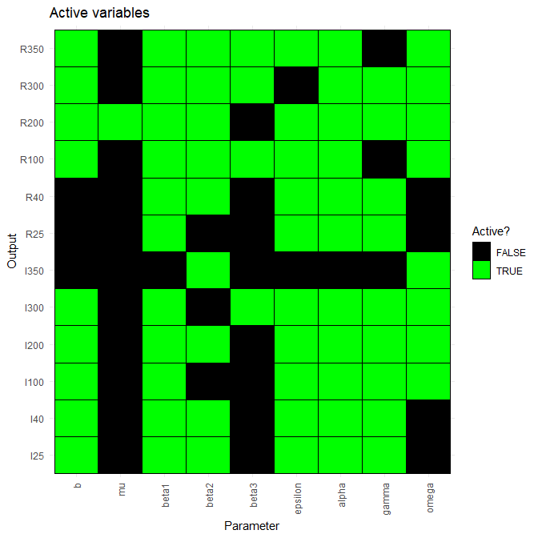

5 Emulators
In this section we train the first wave of emulators and explore them through various visualisations.
Let us start by splitting wave0 in two parts: the training set (the first half), on which we will train the emulators, and a validation set (the second half), which will be used to conduct emulator diagnostics.
training <- wave0[1:90,]
validation <- wave0[91:180,]5.1 Training emulators
We are now ready to train the emulators using the emulator_from_data function, which needs at least the following data: the training set, the names of the targets we want to emulate and the ranges of the parameters. By default, emulator_from_data assumes a square-exponential correlation function and finds suitable values for the variance \(\sigma\) and the correlation length \(\theta\) of the process \(u(x)\). In this workshop, in order to shorten the time needed to train emulators, we pass one more argument to emulator_from_data, setting the correlation length (a hyperparameter defining the covariance structure of the process \(u(x)\)) to be \(0.55\) for all emulators. Normally, the argument c_lengths will not be needed, since emulator_from_data will estimate them for us, based on the training data.
ems_wave1 <- emulator_from_data(training, names(targets), ranges,
c_lengths= rep(0.55,length(targets)),
verbose = FALSE)## I25
## I40
## I100
## I200
## I300
## I350
## R25
## R40
## R100
## R200
## R300
## R350
## I25
## I40
## I100
## I200
## I300
## I350
## R25
## R40
## R100
## R200
## R300
## R350In ems_wave1 we have information about all emulators. Let us take a look at the emulator of the number of recovered individuals at time \(t=200\):
ems_wave1$R200## Parameters and ranges: b: c(0, 1e-04): mu: c(0, 1e-04): beta1: c(0.2, 0.3): beta2: c(0.1, 0.2): beta3: c(0.3, 0.5): epsilon: c(0.07, 0.21): alpha: c(0.01, 0.025): gamma: c(0.05, 0.08): omega: c(0.002, 0.004)
## Specifications:
## Basis functions: (Intercept); b; mu; beta1; beta2; epsilon; alpha; gamma; omega
## Active variables b; mu; beta1; beta2; epsilon; alpha; gamma; omega
## Regression Surface Expectation: 496.7973; 2.1201; -3.1644; 8.4693; 23.29; -13.2785; -58.2566; -3.85; -57.486
## Regression surface Variance (eigenvalues): 0; 0; 0; 0; 0; 0; 0; 0; 0
## Correlation Structure:
## Bayes-adjusted emulator - prior specifications listed.
## Variance (Representative): 81.04376
## Expectation: 0
## Correlation type: exp_sq
## Hyperparameters: theta: 0.55
## Nugget term: 0.05
## Mixed covariance: 0 0 0 0 0 0 0 0 0The print statement provides an overview of the emulator specifications, which refer to the global part, and correlation structure, which refers to the local part (see Section 2.3 for the distinction between the global and local part of an emulator):
Active variables: these are the variables that have the most explanatory power for the chosen output.
Basis Functions: these are the functions composing the vector \(g(x)\). Note that, since by default
emulator_from_datauses quadratic regression for the global part of the emulator, the list of basis functions contains not only the active variables but also products of them.First and second order specifications for \(\xi\) and \(u(x)\). Note that by default
emulator_from_dataassumes that the regression surface is known and its coefficients are fixed. This explains why Regression Surface Variance and Mixed Covariance (which shows the covariance of \(\xi\) and \(u(x)\)) are both zero. The term Variance refers to \(\sigma^2\) in \(u(x)\).
We can also plot the emulators to see how they represent the output space: the emulator_plot function does this for emulator expectation (default option), variance, standard deviation, and implausibility.
The emulator expectation plots show the structure of the regression surface, which is at most quadratic in its parameters, through a 2D slice of the input space.
emulator_plot(ems_wave1$R200, params = c('beta1', 'gamma'))Here for each pair \((\bar \beta_1,\bar \gamma)\) the plot shows the expected value produced by the emulator ems_wave1$R200 at the parameter set having \(\beta_1=\bar \beta_1\), \(\gamma=\bar \gamma\) and all other parameters equal to their mid-range value (the ranges of parameters are those that were passed to emulator_from_data to train ems_wave1).
Looking at what variables are active for different emulators is often an instructive exercise. The code below produces a plot that shows all dependencies at once.
plot_actives(ems_wave1)
From this table, we can immediately see that mu is inactive for most outputs, while beta1, beta2, epsilon, alpha, gamma are active for most outputs. We also see that beta3 tends to be active for outputs at later times and inactive for outputs at earlier times, as one would expect. Note that beta3 is active for R100: even if this is not necessarily what we would have expected, this is not a problem. This is because emulators make use both of the regression hypersurface and of weakly stationary processes to account for differences between the model output and the regression surface. In particular, we should not expect the regression surface to be able to perfectly capture the model output’s behaviour.
As mentioned above, emulator_plot can also plot the variance of a given emulator:
emulator_plot(ems_wave1$R200, plot_type = 'var', params = c('beta1', 'gamma'))This plot shows the presence of a training point (purple-blue area on the right) close to the chosen slice of the input space. The purple-blue area indicates that the variance is low when we are close to the training point, which is in accordance with our expectation.